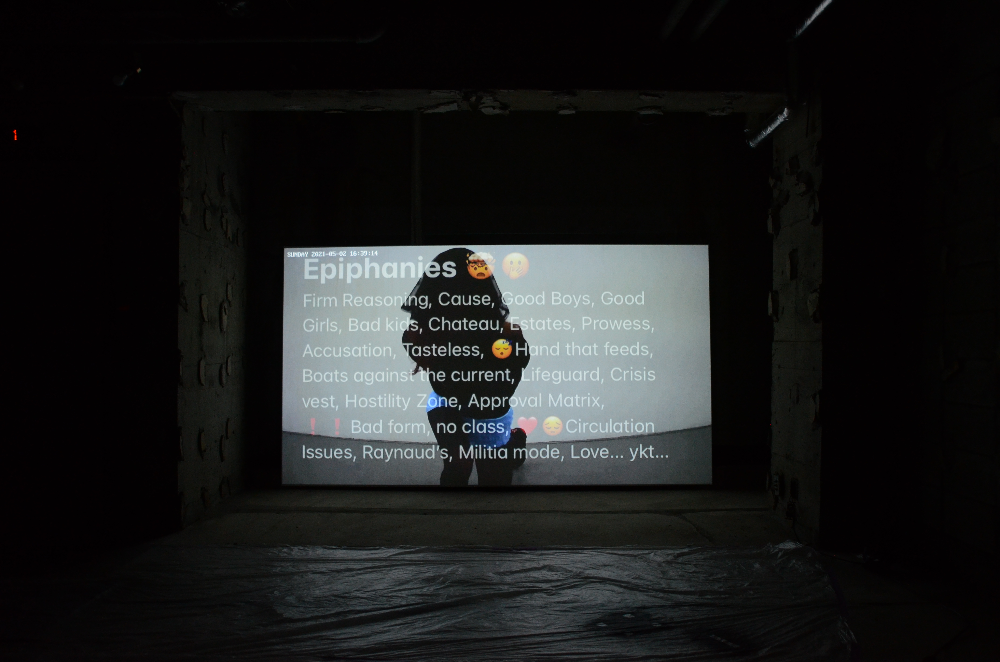

Suite 217, 2022. 3d rendered self portraits.

Suite 217, 2022. 3d rendered self portraits.

Gargoyle Girl, 2022. 3d rendered still included in "Steal My Sunshine", a group exhibition at Mery Gates Gallery in Brooklyn, NY.

Guarded, 2020. 3d rendered still.

Lean Towards Indulgence, Long For Discipline. Dance, 3:34, 2021. Included in "Sundae", a group exhibition at Mcg21xoxo Gallery, in Matsudo, Japan.
Lean Towards Indulgence, Long For Discipline. Dance, 3:34, 2021. Included in "Sundae", a group exhibition at Mcg21xoxo Gallery, in Matsudo, Japan.
Office Luck and Bounty, 2020. 3d rendered video: 2:33, archived in Do Not Research's second publication and first book, as well as being presented in the book's launch at the New Museum, NY.

Gifted & Talented Score Report #2, 2020. Laminated poem presented in "Behind the Times", a group exibition curated by Alyssa Davis Gallery & Underground Flower Collective, online.

Coffee Cup #3 - Dog Memory, 2019. Suspended plaster sculpture in coffee, presented in "Strange Prayer", a group exibition at Mery Gates Gallery in Brooklyn, NY .
Dark Wlk 2019. 3d rendered video: 2:52, included in "Strange Prayer" a group exhibition at Lubov Gallery, New York, NY.
For Ms. Meyers, 2017. 3d rendered video: 1:34, included in "Strange Prayer" a group exhibition at Lubov Gallery, New York, NY.